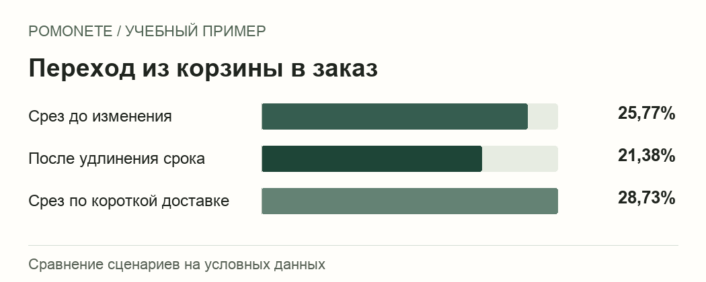

Корзины есть, заказов меньше. Где смотреть аналитику Яндекс Маркета
Как селлеру отделить падение перехода из корзины в заказ от сокращения самой аудитории.
На воронке стоек для ноутбуков верхний этап почти ровный, но на Яндекс Маркете меньше заказанных единиц. Аналитика по одному проценту сбивает с толку: сначала надо решить, хватает ли интереса к товару и где именно расходятся события. Здесь будем смотреть от корзины к оформлению.
Интервал должен вмещать обе стадии
Сравните добавления и заказы на уровне одного региона или набора предложений. Отдельно запишите срок получения, если он сдвинулся. Помните, что показатели за календарную неделю могут описывать разные группы людей. Для оценки пользовательской воронки нужен путь одного и того же события, а на агрегатах мы используем приближение.
Чтобы пересобрать расчёт «Переход из корзины в заказ» для своего магазина, перенесите в него исходные числа. В формуле A обозначает «заказанные позиции», B обозначает «добавления в корзину». Деление отвечает за долю, умножение на 100 переводит её в проценты. При нулевом знаменателе долю оставляют пустой. Запишите рядом период и охват каждого среза. Если для одной строки известна только оценка, оставьте пояснение непосредственно рядом с ней: по итоговой цифре источник уже не восстановить.
Переход из корзины в заказ = A ÷ B × 100
| Условие | Заказанные позиции | Добавления в корзину | Переход из корзины в заказ |
|---|---|---|---|
| Срез до изменения | 201 | 780 | 25,77% |
| После удлинения срока | 170 | 795 | 21,38% |
| Срез по короткой доставке | 102 | 355 | 28,73% |

В сценарии «Срез до изменения» в формулу подставляем заказанные позиции = 201, добавления в корзину = 780. Получается 25,77%. Подставки под монитор продавались с прежним сроком доставки. В выгрузке зафиксированы неизменные настройки фильтра.
В сценарии «После удлинения срока» в формулу подставляем заказанные позиции = 170, добавления в корзину = 795. Получается 21,38%. Число добавлений осталось близким к прежнему, а заказы уменьшились по этой группе артикулов.
В сценарии «Срез по короткой доставке» в формулу подставляем заказанные позиции = 102, добавления в корзину = 355. Получается 28,73%. Оставили предложения с близким сроком получения и сопоставимой конечной ценой.
Если «Срез до изменения» взять за исходную точку, «После удлинения срока» меняет показатель «переход из корзины в заказ» на -4,39 п. п., а «Срез по короткой доставке» на 2,96 п. п.. Между двумя последними строками разница составляет 7,35 п. п. при вычитании второй из третьей. Смотрите, какой именно вход изменился между строками. Если менялись объём и условия одновременно, итог сравнения относится ко всему сочетанию.
При расчёте «переход из корзины в заказ» оставляйте исходную точность, пока складываете значения и сверяете строки. В таблице видны 25,77%, 21,38% и 28,73%, уже округлённые для чтения. При суммировании многих периодов используйте исходные данные. Например, удельные результаты с разными знаменателями нужно пересобрать из числителей и соответствующих объёмов, а затем округлить. Пометьте, где округление применяется, чтобы при передаче отчёта речь шла об одних и тех же числах.
Почему «сбой корзины» требует проверки
Покупатель мог выбрать предложение и вернуться позже, заказать две единицы вместо одной или оформить другой вариант. Сравните таблицу по предложению и неделям. Особенно легко ошибиться при очистке данных: аналитик исключает поздние заказы, но сохраняет все добавления в корзину последних дней.
Воспроизводимость здесь начинается с критериев включения. Отметьте, чем «Срез до изменения» отличается от «Срез по короткой доставке» и какие наблюдения будут отброшены в каждой строке. Как подтверждение используйте отчёт аналитики и история доступности предложения. У неполных записей выделите одну причину. Она покажет, какие цифры ещё стоит собирать и какой объём анализа потерян.
Рядом с таблицей показов положите календарь доступности, позиций и цен. Выгрузка агрегатов удобна для первого сигнала, но день с выключенным предложением ломает сравнение. Для каждой крупной группы полезно иметь отдельные суммы числителя и знаменателя. Если у дорогой категории мало показов, сводная конверсия почти полностью повторит поведение ходовых позиций. Для разбора причины начните именно с групп, у которых заметно изменился вклад в суммарную аудиторию.
Что сильнее всего меняет результат
Продолжим на базе «После удлинения срока» (21,38%). Разложим расчёт на отдельные входы: «заказанные позиции», «добавления в корзину». Для удобства каждый опыт меняет одну величину примерно на десятую часть. Во всех остальных полях оставляем исходные числа. Для проверки более длинного периода шаги можно подобрать по фактическим колебаниям из истории.
- «Заказанные позиции» меняется с 170 на 187. При прежних остальных входах получается 23,52%, сдвиг составляет 2,14 п. п..
- «Добавления в корзину» меняется с 795 на 875. При прежних остальных входах получается 19,43%, сдвиг составляет -1,96 п. п..
Отметьте в рабочей таблице, что «заказанные позиции» показал сдвиг 2,14 п. п.. Переведите эту величину в цену решения: проверьте, достаточно ли её для смены выбранного режима. Если решение остаётся тем же, ограничьтесь контролем на очередной дате. При перевороте вывода запросите уточнение исходного значения и повторите опыт.
Попробуйте сменить период с недели на 14 дней. При длинном выборе покупательские действия лучше успевают попасть в анализ. Если удлинение окна убирает почти весь разрыв, количество действий действительно восстановилось, а динамика на коротком интервале могла отражать только задержку.
Проверка на следующий интервал
Выберите несколько товарных позиций с близкими ценами, выделите обещанный срок получения и соберите сравнение после стабилизации доставки. Если различие повторяется там, где срок уменьшился, можно тестировать поставку ближе к спросу. Добавьте стоимость такой поставки, иначе рост заказов останется без оценки денег.
Снимайте второй срез на тех же условиях. Если изменились источники или доли предложений, добавьте таблицу с фиксированным составом товаров и отметьте, какую долю исходной выборки она охватывает. Получатся два наблюдения для двух вопросов: что произошло у магазина в целом и что изменилось у сравнимых позиций. Заказы закрываются со временем, поэтому суммы по завершённым продажам дополните датой проверки.
Чтобы отделить ошибку оценки от реального изменения, после следующего отчёта соберите «переход из корзины в заказ» дважды. Сначала используйте исходное правило, затем замените только один предположенный вход фактическим. Так аналитика селлера Яндекс Маркета покажет, стоит ли тратить время на повторный замер или менять рабочую операцию. В итоговом отчёте сохраните обе даты проверки.